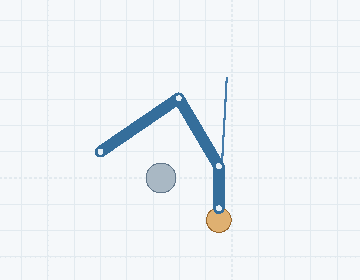

Why did this solution fail?
A concrete gripper collides with a shelf. A local debugger reports the offending geometry.
High-Level Concept Debugger for Agentic Robotics
Understand the structure of robotic solution spaces, not just why a single trajectory failed. HiCoD turns computational evidence into hierarchical, language-accessible physical concepts for LLM agents.
A concrete gripper collides with a shelf. A local debugger reports the offending geometry.
Candidate states may be individually feasible yet disconnected. High-level concepts expose the structure behind failure.
MuJoCo 4.0.1 kinematic replay of the computed one-regrasp sampled path witness.
Actual MuJoCo rendering using mj_forward kinematic replay. Ideal support and attachment; not contact-dynamics or continuous-path validation.

66 frames, 10.6 s. Blue: transfer; green: supported transition.
Two asymmetric interfaces connect continuous physics and language. Abstraction extracts meaning; concretization turns a selected strategy into a mathematical problem and calls existing solvers.
Geometry, constraints, candidate variables, model assumptions
Sample, search, compare, build graphs, estimate structure. Return concepts, scope, and evidence handles.
Instantiate variables and constraints; call IK, grasp planners, TAMP or trajectory optimization; verify candidates.
Query concepts on demand, drill down to evidence, choose interventions, and evaluate again.
Levels describe the object of analysis, not the complexity of the implementation. High-level concepts are statistical, relational or topological descriptors of a specified candidate space.
Implemented in the small transport example: finite-grid endpoint compatibility, connectivity, components and sampled feasibility. Research extensions are listed separately.
Which grasp or attachment modes are admissible at both endpoints? Intersection is necessary, not sufficient, for direct transfer.
G(start) ∩ G(goal)Can the start and goal be linked within a fixed sampled feasible mode? Distinguish graph disconnection from continuous infeasibility.
path_exists(G, start, goal)What fraction of specified samples is feasible, and how many components are observed? Counts depend on the sampler and resolution.
count(free) / count(samples)Which intermediate object poses or handovers can connect incompatible modes? Verify release, support and reacquisition.
Where do mode transitions disappear, and which upstream decisions restrict downstream feasibility?
How do feasible structure and solution quality change under allowed interventions or model uncertainty?
The longer-term library includes shared-grasp compatibility, intermediate-pose bridging, grasp–IK/drag connectivity, constraint conflicts, cross-stage dependencies, counterfactual feasibility and dynamic feasibility. The prototype does not implement the full research algorithms.
A three-joint planar robot with eight ideal attachment directions and two IK branches. The computed example has four common endpoint attachment modes and a locally valid state at every stage, but no fixed-mode sampled path. Explore the arm, the candidate graph, and the underlying rejected probes.
Analytic geometric evidence only. MuJoCo 4 replay code is supplied but has not been executed; the example is not full grasp execution or a continuous-space proof.
In a computed analytic example, no fixed-attachment sampled path was found, but one supported regrasp connects the sampled hybrid graph. Change the supported stages and inspect the evidence behind mode transitions and bridging regions.
Ideal support assumption; sampled geometric evidence, not a continuous or dynamic certificate.
Six session-bound tools for diagnosis, concept queries, evidence drill-down, inspection, intervention comparison and graph access. Try the deterministic browser sequence or integrate with MCP.
Browse bilingual visual explanations and literature sources for 60 L4 concepts, then explore all 75 nodes and 304 typed relationships.
32 public designed tasks, 448 finite action reference outcomes, six information profiles and a shared solver budget. Try an interactive episode or run your own LLM comparison. Existing scripted results are infrastructure checks only.
A simplified planar Cartesian carrier moves a rectangular payload through a shelf-like wall. Two fixed payload orientations represent two abstract transport modes. Change the aperture, inspect a single straight candidate, and compare whole sampled configuration spaces.
Expand the diagnosis to inspect the evidence used to generate it.
Browser demo: deterministic axis-aligned collision proxy and finite-grid graph; it is not MuJoCo running in the browser. The downloadable Python example uses MuJoCo 4.0.1 contact queries instead. Both are pedagogical transport proxies, not articulated grasp or contact-dynamics benchmarks.
The Python example creates a three-joint planar carrier, two fixed orientations and a variable-width wall. It probes MuJoCo contact geometry, builds a sampled graph, and emits JSON with semantic claims, counts, component structure and a drill-down trace.
git clone https://github.com/CRLqinliang/CRLqinliang.github.io.git
cd CRLqinliang.github.io/hicod
python -m venv .venv
source .venv/bin/activate
pip install -r requirements.txt
python examples/mujoco4_transport.py --gap 0.07
python -m unittest discover -s testsVersion target: MuJoCo 4.0.1, Python 3.11+. The MuJoCo runtime has not been validated in the authoring environment. No measured performance results are claimed.
Definition, mathematical evaluator, semantic interpretation, applicability, evidence and dependencies. Use a DAG internally and a trace tree for each report.
Python tools first; MCP adapter and lazy evidence queries next. Keep the concept engine independent of LLM and planner.
Compare raw feedback, numerical metrics and grounded concepts with identical solvers and budgets. Measure success, tokens, calls, total latency and OOD generalization.
No path in a sampled graph is not a proof of continuous-space infeasibility. A path found in a graph remains a candidate until verified at the required geometric, dynamic and execution resolution.